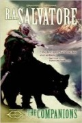

The Companions
Écrit par R. A. Salvatore, publié en Août 2013.
AVERTISSEMENT
Cette page révèle certaines informations qui pourraient gâcher la lecture du roman. Si vous pensez lire ce livre dans un futur proche, mieux vaut ne pas parcourir ce résumé !
1463. Quatre des cinq compagnons du Hall (le vieux nain Bruenor, sa fille adoptive l'humaine druide/magicienne Catti-brie, le halfelin roublard Regis et le barbare Wulfgar) se retrouvent sans bien savoir comment, après leur mort, dans la forêt enchantée de Iruladoon. Catti-brie, Élue de la déesse de la nature Mailikki, leur apprend que la Fracture, le temps du chaos et du réalignement où les dieux vont réclamer leurs royaumes et leurs fidèles, est proche. S'il devrait être aisé pour Moradin et Gruumsh de retrouver leur fidèles, la tâche sera beaucoup plus ardues pour de nombreux autres dieux. Mailikki leur propose alors un choix : continuer leur chemin sur le plan de leur divinité respective (et donc rester mort) ou renaître sur Faerûn, séparément, à condition de faire le serment à la déesse d'être aux côtés de leur compagnon Drizzt Do'Urden "aux heures les plus sombres" de celui-ci. Après certaines hésitations, tous sauf Wulfgar accepteront la nouvelle vie qui leur est proposée. Les compagnons doivent se retrouver la nuit de l’équinoxe de printemps de leur 21 ans, à Kelvin's Cairn, dans le Valbise, au nord de l'Épine Dorsale du Monde.
Cattie-brie, maintenant une petite fille appelée Ruqiah, vit dans une tribu du désert du Netheril. À 5 ans, malgré son jeune âge, et grâce à sa magie, elle arrivera à se débarrasser de deux agents shadovars du Netheril qui voulaient la capturer, mais tombera plus tard entre les mains de la divinatrice Lady Avelyere, qui la fera entrer dans son académie de magie à Pénombre [Shade Enclave], la capitale des Douze Princes. Au moment de quitter sa tribu elle professe à ses "parents" que le désert finira pas détruire le Netheril et qu'Anauroch retrouvera sa place. Lorsque Cattie-brie atteint ses 16 ans, Lady Avelyere découvre grâce à ses talents d'hypnotisme qui est vraiment Ruqiah, mais la jeune fille parvient une nouvelle fois à s'échapper et s'enfuit vers l'ouest. Nous sommes maintenant en 1479 et cette année là se produit un phénomène très spécial. Les sorts profanes ne fonctionnent plus normalement, selon la manière actuelle. Par contre selon l'ancienne, celle d'avant la Magepeste, que Cattie-brie connait, ils fonctionnent de nouveau. La jeune fille arrive finalement dans le village de Longueselle [Longsaddle], siège des Harpells, des magiciens excentriques qui fêtent la fin de la Magepeste. Elle restera à leur côté quelques années, dorénavant sous le nom de Delly Curtie. En 1482 elle arrive au Valbise et passe son temps dans la communauté de Dix-Cités [Ten Towns], principalement entre Bryn Shander et Lonelywood. Drizzt Do'Urden n'a pas été vu par ici depuis presque 20 ans.
Regis est pour sa part "né" dans la ville portuaire de Delhountle [Delthundle] au sud de l'Aglarond, d'une mère descendante de genasis (eau) et d'un père halfelin. Il devient "Araigné", un gosse bravache qui pêche des huîtres. À 9 ans il rencontre Pericolo Topolino, le grand-père des assassins, qui le fera entrer dans son "organisation" de halfelins aux côtés du magicien Wigglefingers et de la roublarde Donnola qui lui apprendra le maniement des armes légères. Leur recherche du trésor de la liche Ebonsoul en 1481 tourne mal, même si le halfelin réussit à conserver la dague magique de celle-ci, et Régis est alors contraint de s'enfuir, passant par Procampur dans le royaume d'Impultur, puis Suzail au Cormyr. Continuant sa route vers le Gué de la dague [Daggefort] il fait la connaissance aux abords du pont de Boreskyr [Boareskyr Bridge] des Poneys Grimaçants, une bande de halfelins qui protègent la route commerciale qui va de Memnom à Waterdeep. En 1483, Regis arrive à la cité de Luskan. Il y rencontre un ancien ennemi, l'elfe noir Jarlaxle, mais ce dernier ne le reconnait évidement pas. Le halfelin part alors pour le Valbise et s'installe près de Lonelywood, où Cattie-brie le retrouvera. Mais ils sont découverts par Braelin, un espion envoyé par Jarlaxle.
Bruenor, de son côté, est devenu Reginald, fils de Roundshield, capitaine de la garde de la citadelle naine de Felbarr dans les Marches d'Argent, lequel sera tué peu après la naissance de son fils par des orcs. Faisant montre d'un grand talent à l'entraînement, il s'exerce avec les meilleurs guerriers de la citadelle. Plus tard, à l'âge de 15 ans, alors que sa barbe commence à pousser, il combat héroïquement des orcs et un géant des montagnes puis s'en va l'année suivante pour Castelmithral [Mithral Hall], l'une des trois communautés naines des Marches d'Argent avec la forteresse de Felbarr et celle d'Adbar. Là, il demande à rejoindre la brigade de Gutbuster, une élite, pour continuer son entrainement, puis entrera quelques années plus tard à Gauntlgrym, une ancienne cité naine sur la route de Neverwinter, où il affrontera des vampires elfes noirs. Bloqué par l'hiver aux alentours de Luskan, Bruenor arrivera finalement dans la région de Dix-Cités cinq jours avant la date du rendez-vous.
1484. Le jour du rendez-vous arrive enfin, après 21 ans de périples. Cattie-brie et Regis font l’ascension de leur côté et, arrivant au sommet, découvrent Drizzt Do'Urden agonisant aux côtés de sa panthère. Quelques instants après ils sont rejoints par Bruenor, qui vient de débusquer une petite troupe formée d'un tieffelin, d'une naine et d'un humain, redescendant de la montagne. Wulfgar finira également par retrouver la compagnie à la cime du Kelvin's Cairn. Il a lui aussi, finalement, décidé d'accepter la nouvelle vie qui lui était proposée pour aider Drizzt, dont la responsable de l’état dans lequel il se trouve est une elfe. Une élu de Lolth ? Pendant ce temps, la liche Ebonsoul, qui n'a pas abandonné l'idée de récupérer sa précieuse dague, est sur les traces du halfelin...